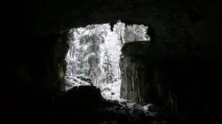
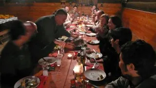

Pınarbaşı'nda Yılbaşı

Bu yılbaşında da geçen yıl olduğu gibi, Kastamonu-Pınarbaşı, Paşakonağı'ndaydık. Uzun bir süredir gelmiyorduk, buraları ve bu insanları özlemişiz. Hem geçen yıldan daha kalabalık, hem de daha organizeydik. Öncü ekipler 30 Aralık günü öğlen saatlerinden itibaren konağa dökülmeye başladılar. Sadece bir defa kar yağmış olmasına karşılık, Pınarbaşı ve civarında her yer bembeyazdı. İlk gecenin sürprizi Ellen'ın doğum gününün kocaman bir pasta ile kutlanmasıydı. Öte yandan, yine ilk gecenin en sebatkar insanı ise, üşenmeden herkese tek tek poker öğreten, ardından da bir türlü öğrenemeyen bu insanlara karşı kaybeden Cem Eğri idi.İkinci gün, sabah kahvaltı sonrası kar altında uzun bir yürüyüşle başladı. Buzluk Mağarası'na gittik ve bu güzeller güzeli mağarada fotoğraf çekip dolaştık. Mağaranın içinde, ismini veren ve geçen defa rastladığımız, buzdan sarkıt ve dikitler yoktu. Büyük olasılıkla bu olgu, OBRUK Sayı 1'de bir yazıya konu olduğu şekilde baharda yüzeydeki karların eridiği ama mağara içi ısının sıfırın altında olduğu çok kısıtlı bir dönemde gerçekleşmekte.

Ardından, koşa koşa Paşakonağı'na dönüş ve kar altındaki toplam 5 saatlik bu yürüyüş sonrası ısınma çabaları. Bu arada, geri kalan herkes geldi. Artık 26 kişiyiz. Masa süslendi, müzik setleri kuruldu ve uzun sürede hazırlanan dehşet bir yılbaşı yemeği için masaya oturuldu.Tabi ki 1 Ocak 2011 sabahına perişan bir şekilde uyanıldı. Saat 12 civarında hala ancak tek gözü açılmış insanlar yukarı kattaki odalarından aşağıya iniyorlardı. Dışarısının -7 derece olması bir miktar üşüyerek toparlanmamızı sağladı. Öte yandan, gün boyu kimsenin bir yere gitmeye niyeti olmadığı aşikardı. Dolayısıyla, sunumlara erken başladık. İlk sunumda Emine "Görsel İlluzyonlar"ı anlattı. Son derece ilginç ve çarpıcı bir sunumda ama, diğer çarpıcı kısım, her resime "Ne, orada ağaç mı var? Göremiyorum", "Kadın mı, nerede?" şeklinde katkıda bulunan izleyicilerdi. Ardından Tuna'nın (12) bilgisayarında da bu tarzda görseller olduğu ortaya çıkması üzerine kendisini derhal kürsüye aldık. Herhangi bir ön hazırlık olmadan yaptığı bu sunumdaki görseller Emine'nin sunumundakinden bile daha fazla tartışmaya yol açtı.
Gecenin devamında, Ali Ethem "Toroslar'dan Akdeniz'e" isimli sunumunu yaptı. Aslında buna bir sunum demek çok zor. Ali Ethem'in etkileyici sesi ile şiirsel bir anlatımla gerçekleştirilen ve gökyüzünden düşen bir su damlasının Toroslar'dan Akdeniz'e yolculuğunu anlatan bu fotoğraf sunumu gerçekte, kısa bir teatral gösteri olarak kabul edilmeli. Tek kelimeyle şahaneydi ve inanılmaz etkileyiciydi. Üçüncü olarak Murat Eğri, Bushman's Hole'a 2004 yılında yapılan dalışın, artık efsane haline gelen hikayesini derin mağara dalışlarının tekniklerinden başlayarak, kapsamlı bir anlatımla sundu.
Ertesi sabah, kahvaltı sonrası, son derece keyifli bir üç günün bitmiş olmasının üzüntüsüyle bu olağanüstü güzel yerden İstanbul'a ve Ankara'ya doğru dağıldık.